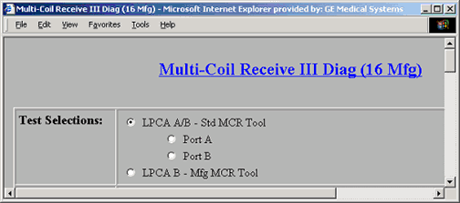
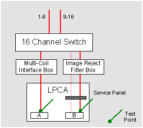
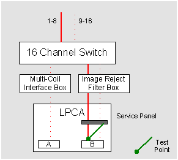
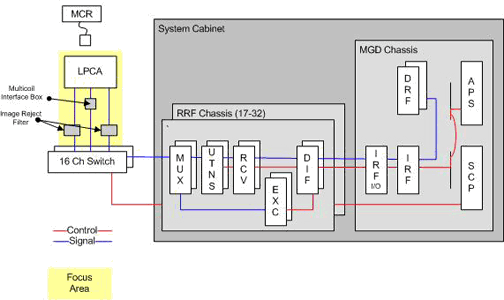

Proprietary to General Electric Company
Direction 5440000, Rev# 5
Signa HDxt Service Methods
Module Version 2.0, Version Date 6/18/09
Proprietary to General Electric Company |
Diagnostics>>RRF Chassis>>Multi-coil Receive Chain
The Multi-coil Receive III (MCR 3) diagnostic isolates receive signal problems between the LPCA and the 16-channel Switch. The user interface was redesigned for the manufacturing version of the diagnostic so it differs from the standard Multi-coil Receive diagnostic in the following ways:
minimizes test time by reducing the number of tools swaps needed
requires a special version of the MCR 3 tool
The MCR 3 diagnostic is part of a suite of three diagnostics (MCR 3, 16-channel Switch, and System Cab) designed to isolate problems in the receive signal path. Based on the results of those three tests, the focus area can be determined. The MCR diagnostic should only be performed when the System Cabinet Loopback and 16-channel Switch diagnostics pass and a receive signal issue persists.
Test Selections:
Test Selections for the Diagnostic are shown in Illustration 1. When the default LPCA A/B – Std MCR Tool option is selected, two (2) standard MCR 3 tools are required. Each is connected to the available ports – A and B. For each port, two sets of data are collected.
When the LPCA B – Mfg MCR Tool option is selected, a special manufacturing MCR tool is required. The tool is connected to Port B in order to test channels 1-8 of the LPCA. These pins cannot be field tested.
| NOTE: | Although multiple tools are not required, a smaller number of tools means more manual intervention will be required. |
Illustration 1: Diagnostic Test Interface

Port A with Preamps OFF and with Preamps ON
This test verifies the signal path from Port A of the LPCA through the multi-coil interface box to the 16-channel Switch while the integrated preamps are off (see Illustration 2). This test ensures that preamps can be turned off.
This test also verifies the signal path from Port A of the LPCA through the multi-coil interface box to the 16-channel Switch while the integrated preamps are on (see Illustration 2). This test ensures that the preamps are functioning properly when On.
Illustration 2: Port A & B Test Points

Port B
This test verifies the signals at the LPCA port. First, the signal data is routed from the 16-channel Switch across channels 1-8. Second, the signal data is routed from the 16-channel Switch across channels 9-16. In the event of signal issues, the next test can be performed in order to isolate the issue.
LPCA B – Mfg MCR Tool
This test is performed with the special manufacturing version of the MCR tool. This tool is designed to test channels 1-8 of Port B.
Illustration 3: Port B Test Point Using Mfg Version of MCR III Tool

LPCA Port(s)
Interconnects between the LPCA and the Input side of the 16-channel Switch
Channels 1-8 between Port B and the Service Panel (not available with standard test)
Two (2) standard version MCR 3 tools that is based on field strength (a quantity of two tools are recommend, but only one required to perform test)
One (1) manufacturing version MCR 3 tool that is based on field strength
Illustration 4: Multi-Coil Receive III Functional Block Diagram

To run the tests
Connect a standard MCR 3 tool to Port A and another standard MCR 3 tool to Port B, select LPCA A/B - Std MCR Tool, and click [Run].
If you do not have multiple versions of the tool, connect the tool in Port A. When instructed by the interface to do so, disconnect it and connect it to Port B.
Once the test is complete, remove the standard MCR 3 tools and place a Manufacturing version of the MCR tool to Port B, select LPCA B - Mfg MCR Tool, and click [Run].
Examine the results and take the appropriate action. Review the error log for the next course of action, or reference the Troubleshooting Guide troubleshooting guide.
Review the error log and corresponding extended error messages for subsequent actions.
When executed in conjunction with the System Cabinet Loopback diagnostic, system problems can be isolated to one of the following:
Signal source – the Exciter
RRF Chassis’ receive chain – the MUX, UTNS, and receiver boards
16-channel Switch, cabling & hardware, and input port on the MUX boards
Related Links
Related Diagnostics